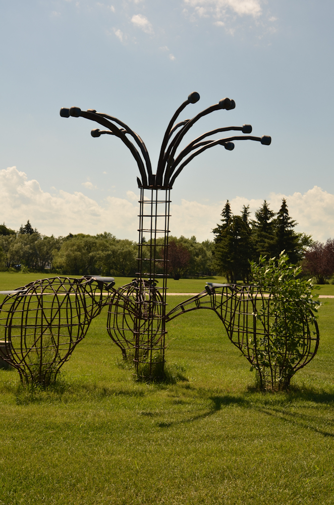
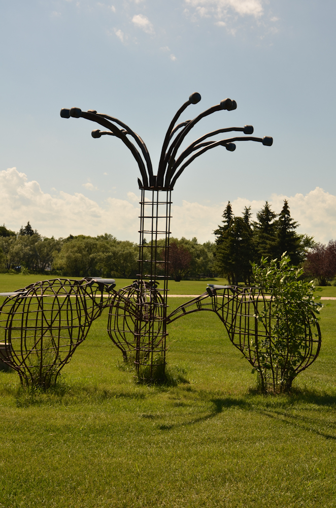

Jack's Bandicoots

Jack likes to portray human behaviour through the bandicoots that are everywhere in his artwork. Jack likes certain aspects of human faces and nature which inspire him to create bandicoots for his art.
Here is a sculpture of bandicoots Jack created outside the Neil Balkwill Civic Arts Centre.


 
